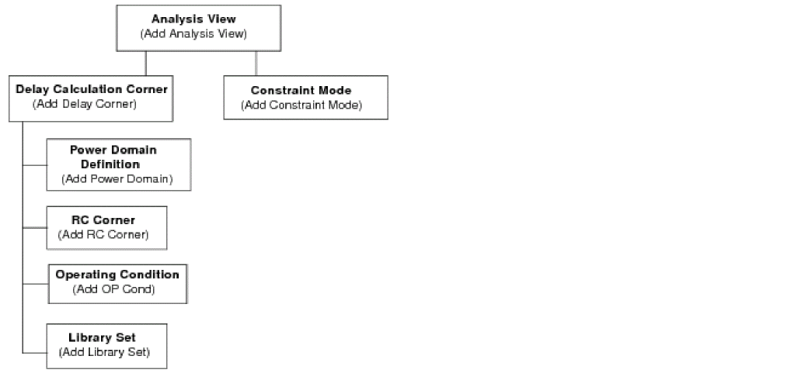
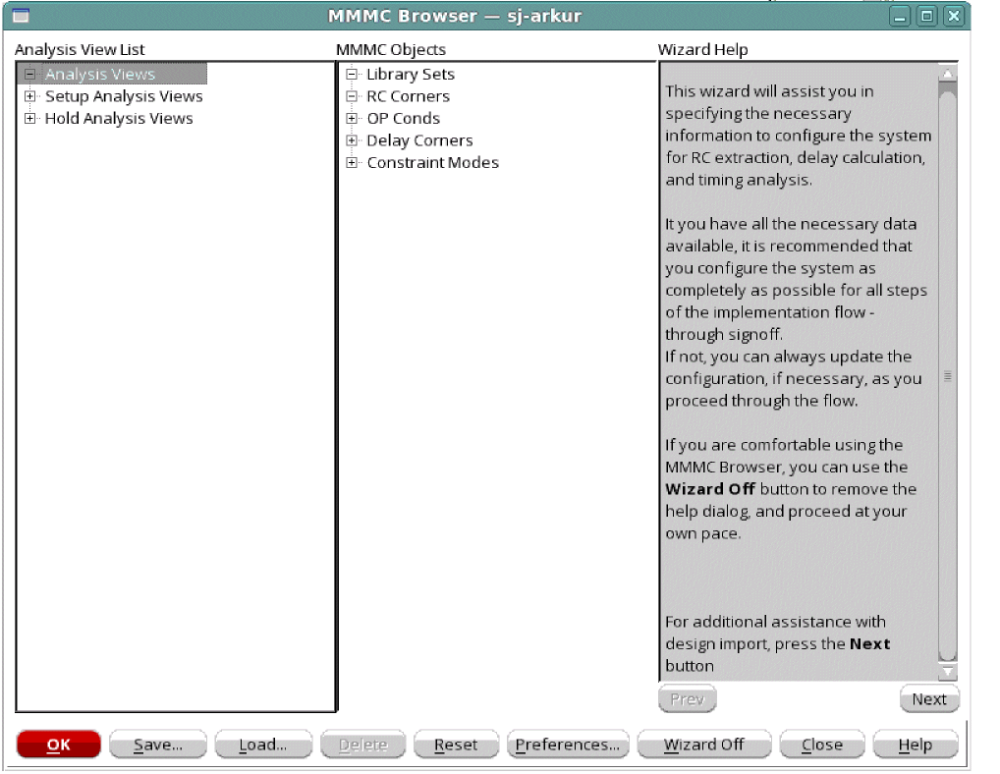

MMMC Browser
Use the MMMC Browser to hierarchically create the view configurations necessary for multi-mode multi-corner analysis. Each top-level set of information is called an analysis view, and is composed of a delay calculation corner and a constraint mode. The active analysis views defined in the software represent the different design variations that will be analyzed.

You can access the following forms from the MMMC Browser by double clicking on the generic object or analysis view name:
- Add Library Set
- Add OP Cond
- Add RC Corner
- Add Constraint Mode
- Add Delay Corner
- Add Power Domain
- Add Analysis View
- Add Hold Analysis View
- Add Setup Analysis View
You also can access the following editing forms from the MMMC Browser by double clicking on a specific object name:
- Edit Library Set
- Edit OP Cond
- Edit RC Corner
- Edit Constraint Mode
- Edit Delay Corner
- Edit Power Domain
- Edit Analysis View
Additionally, you can access the following forms to change how the configuration is displayed and also view help on each of the options in the MMMC Browser:
Wizard Help
By default, the MMMC browser opens in Wizard On mode. Use the Wizard Help pane to view details on how to configure MMMC.

The wizard help will guide you through each of the recommended settings in the order shown below.
- Timing library
- RC extraction
- Operating conditions
- Delay corners
- Constraint modes
- Analysis views
- Setup and Hold View
For more information on configuring the MMMC settings and generating a MMMC view definition file, see MMMC Configuration.
Return to top